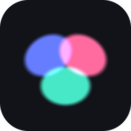

Compress images down to a fraction of their size while keeping them looking good, using 2D Gaussian splatting.
Free and open source. Windows, macOS and Linux.
Most image formats chop a picture into a fixed grid and spend the same effort on every block. gsic does something different. It represents your image as a cloud of soft, coloured ellipses and places more of them where the detail actually is, so smooth areas cost almost nothing and edges stay sharp.
Around 1% of the size of an uncompressed image, and it beats JPEG by about 3 dB on illustration and artwork at the same file size.
Roughly three times faster than the reference research implementation, while running on far cheaper hardware.
Uses your graphics card when it can and every CPU core when it cannot. No special hardware required.
Drag in a whole folder of images and get a compressed copy of each one, with a live preview as it works.
Unpack the archive and run gsic-gui for the desktop app, or gsic for the command line. Nothing needs installing. Every download ships with a SHA-256 checksum so you can verify it.
If your machine is more than a decade old, one of these will be the right build. They are the same program with the same features.
The 32-bit build handles images up to 16 megapixels, roughly 4000 by 4000. That is a limit of 32-bit Windows itself, which does not give a program enough memory to work on anything larger. Files made by either build open in the other.
Not sure which you have? On Windows, open Settings, then System, then About, and look at "System type". If it says 64-bit, use the standard download above.
Your image is rebuilt as a sum of thousands of coloured 2D Gaussians. Each one has a position, a size, a rotation and a colour. Compressing an image means running an optimizer that nudges those numbers until the reconstruction matches the original, then storing only the numbers. Because the result is a set of shapes rather than a grid of pixels, it can be decoded at any resolution you like.
gsic compress photo.png # make photo.gsi
gsic compress *.png --preset high # a whole folder, best quality
gsic decompress photo.gsi # back to PNG
gsic decompress photo.gsi --scale 2 # decode at twice the sizeMeasured against the published figures of the Image-GS research paper, on a laptop GPU rather than the workstation card used in the paper.
| 2048 x 2048, 1000 steps | Image-GS (A6000) | gsic (RTX 4050 laptop) |
|---|---|---|
| 10K Gaussians | 18.74 s | 6.38 s |
| 50K Gaussians | 26.32 s | 7.90 s |
| Quality across 45 test images | 32.99 dB at 0.366 bpp | 33.34 dB at 0.340 bpp |
Higher dB is better and lower bpp means a smaller file, so gsic is ahead on both at once. Full detail is in the technical report.